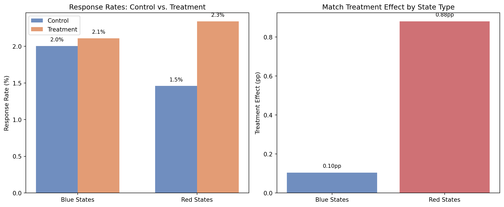

Does Price Matter in Charitable Giving? Evidence from a Large-Scale Natural Field Experiment
Causal Inference
Econometrics
Replicating Karlan & List (2007) to examine how matching grant ratios affect charitable donation rates using a large-scale natural field experiment.
Author
Joyi Zhang
Published
April 24, 2026
Introduction
Karlan and List (2007) conducted a large-scale natural field experiment to study whether the “price” of charitable giving—manipulated through matching grants—affects donor behavior. In partnership with a liberal US nonprofit organization, they sent direct mail solicitations to over 50,000 prior donors. Recipients were randomly assigned to either a control group (no match) or one of several treatment groups that varied by match ratio ($1:$1, $2:$1, or $3:$1), maximum matching grant amount ($25,000, $50,000, $100,000, or unstated), and suggested donation amount.
The key findings were:
Offering a match significantly increased both the response rate (by about 22%) and revenue per solicitation (by about 19%) relative to the control group.
Surprisingly, larger match ratios ($2:$1 and $3:$1) did not generate additional donations beyond the $1:$1 match—contradicting conventional fundraising wisdom.
The match effect was concentrated among donors in “red” (Republican-leaning) states, while donors in “blue” states showed little responsiveness to the match.
These results have important implications for fundraising strategy and for understanding the economics of charitable giving more broadly.
Data
Show Code
import pandas as pdimport numpy as npimport statsmodels.api as smimport matplotlib.pyplot as pltdf = pd.read_stata("AERtables1-5.dta")df = df[df['treatment'].notna()].copy()print(f"Total observations: {len(df):,}")print(f"Treatment group: {int(df['treatment'].sum()):,}")print(f"Control group: {int(df['control'].sum()):,}")
Total observations: 50,083
Treatment group: 33,396
Control group: 16,687
Part 1: Balance Test (Table 1)
A key requirement for valid causal inference in a randomized experiment is that the treatment and control groups are comparable on observable characteristics. Table 1 in the paper demonstrates that random assignment successfully balanced the groups across demographic and giving-history variables.
Table 1: Summary Statistics and Balance Check (Replication of Table 1)
Variable
All (Mean)
All (SD)
Treatment (Mean)
Treatment (SD)
Control (Mean)
Control (SD)
0
Months since last donation
13.007
(12.081)
13.012
(12.086)
12.998
(12.074)
1
Highest previous contribution
59.385
(71.177)
59.597
(73.052)
58.960
(67.269)
2
Number of prior donations
8.039
(11.394)
8.035
(11.390)
8.047
(11.404)
3
Years since initial donation
6.098
(5.503)
6.078
(5.442)
6.136
(5.625)
4
Pct already donated in 2005
0.523
(0.499)
0.524
(0.499)
0.523
(0.499)
5
Female
0.278
(0.448)
0.275
(0.447)
0.283
(0.450)
6
Couple
0.092
(0.289)
0.091
(0.288)
0.093
(0.290)
7
Observations
50,083
33,396
16,687
The means across treatment and control groups are virtually identical for all variables, confirming successful randomization. For example, the average highest previous contribution is $59.60 in the treatment group and $58.96 in the control group—a trivially small difference. This balance gives us confidence that any differences in donation behavior we observe can be attributed to the experimental treatments, not to pre-existing differences between groups.
Table 2: Mean Responses by Treatment (Replication of Table 2A, Panel A)
Group
N
Response Rate
Dollars Given (Uncond.)
Dollars Given (Cond.)
0
Control
16687
0.018 (0.001)
0.813 (0.063)
45.540 (2.397)
1
Treatment (All)
33396
0.022 (0.001)
0.967 (0.049)
43.872 (1.549)
2
1:1 Match
11133
0.021 (0.001)
0.937 (0.089)
45.143 (3.099)
3
2:1 Match
11134
0.023 (0.001)
1.026 (0.089)
45.337 (2.725)
4
3:1 Match
11129
0.023 (0.001)
0.938 (0.077)
41.252 (2.222)
The results show that the match offer increased the response rate from 1.8% (control) to 2.2% (treatment)—a 22% increase. Revenue per solicitation rose from $0.813 to $0.967, a 19% increase. However, comparing across match ratios, there is no meaningful difference: the 1:1, 2:1, and 3:1 matches all yield similar response rates and unconditional giving amounts. This suggests that the existence of a match matters, but its size does not.
The paper estimates probit models, but as noted by the homework instructions (and confirmed by comparing coefficients), the reported marginal effects closely match OLS estimates. We replicate Table 3 using OLS (linear probability models).
Column 1: Simple Treatment Effect
Show Code
# Column 1: Simple treatment effectX1 = sm.add_constant(df[['treatment']])model1 = sm.OLS(df['gave'], X1).fit()# Column 2: With sub-treatment indicatorsX2 = sm.add_constant(df[['treatment', 'ratio2', 'ratio3', 'size25', 'size50', 'size100', 'askd2', 'askd3']])model2 = sm.OLS(df['gave'], X2).fit()# Column 3: Already gave in 2005 (dormant==1)df_dormant = df[df['dormant']==1]X3 = sm.add_constant(df_dormant[['treatment']])model3 = sm.OLS(df_dormant['gave'], X3).fit()# Column 5: Had not given yet in 2005 (dormant==0)df_recent = df[df['dormant']==0]X5 = sm.add_constant(df_recent[['treatment']])model5 = sm.OLS(df_recent['gave'], X5).fit()# Display resultsdef format_results(models, labels): vars_list = ['treatment', 'ratio2', 'ratio3', 'size25', 'size50', 'size100', 'askd2', 'askd3'] var_labels = {'treatment': 'Treatment','ratio2': 'Treatment × 2:1 ratio','ratio3': 'Treatment × 3:1 ratio','size25': 'Treatment × $25K threshold','size50': 'Treatment × $50K threshold','size100': 'Treatment × $100K threshold','askd2': 'Treatment × medium example','askd3': 'Treatment × high example' } rows = []for v in vars_list: row = {'Variable': var_labels[v]}for m, lbl inzip(models, labels):if v in m.params.index: coef = m.params[v] se = m.bse[v] pv = m.pvalues[v] stars ='***'if pv <0.01else ('**'if pv <0.05else ('*'if pv <0.1else'')) row[lbl] =f"{coef:.4f}{stars} ({se:.4f})"else: row[lbl] ='' rows.append(row) rows.append({'Variable': 'N', **{lbl: str(int(m.nobs)) for m, lbl inzip(models, labels)}})return pd.DataFrame(rows)results_table = format_results( [model1, model2, model3, model5], ['(1) All', '(2) All', '(3) Gave in 2005', '(5) Not yet in 2005'])results_table
Table 3: Effect of Match on Probability of Donating (OLS, Replication of Table 3)
Variable
(1) All
(2) All
(3) Gave in 2005
(5) Not yet in 2005
0
Treatment
0.0042*** (0.0013)
0.0022 (0.0025)
0.0031** (0.0013)
0.0054** (0.0024)
1
Treatment × 2:1 ratio
0.0019 (0.0019)
2
Treatment × 3:1 ratio
0.0020 (0.0019)
3
Treatment × $25K threshold
-0.0006 (0.0022)
4
Treatment × $50K threshold
0.0003 (0.0022)
5
Treatment × $100K threshold
-0.0001 (0.0022)
6
Treatment × medium example
0.0010 (0.0019)
7
Treatment × high example
0.0015 (0.0019)
8
N
50083
50083
26217
23866
The key results from Table 3:
Column (1): The treatment (any match) increases the probability of giving by 0.42 percentage points (p < 0.01). Against a baseline of 1.8%, this is a 22% increase.
Column (2): Neither the 2:1 nor 3:1 ratio has a statistically significant additional effect beyond the 1:1 match. The match threshold amounts and example amounts are also insignificant.
Columns (3) vs. (5): The match effect is slightly larger for those who had not yet given in 2005.
Something Additional: Heterogeneous Effects by Red vs. Blue States
One of the most striking findings in the paper is that the match treatment was primarily effective in “red” states (those that voted for George W. Bush in 2004) rather than “blue” states. This is a notable result because the nonprofit organization is liberal-leaning, so donors in red states are a political minority in their local environment.
Show Code
# Red vs Blue state analysisfig, axes = plt.subplots(1, 2, figsize=(12, 5))# Panel 1: Response rates by groupcategories = ['Blue States', 'Red States']control_rates = [ df.loc[(df['control']==1) & (df['red0']==0), 'gave'].mean(), df.loc[(df['control']==1) & (df['red0']==1), 'gave'].mean()]treatment_rates = [ df.loc[(df['treatment']==1) & (df['red0']==0), 'gave'].mean(), df.loc[(df['treatment']==1) & (df['red0']==1), 'gave'].mean()]x = np.arange(len(categories))width =0.35bars1 = axes[0].bar(x - width/2, [r*100for r in control_rates], width, label='Control', color='#4C72B0', alpha=0.8)bars2 = axes[0].bar(x + width/2, [r*100for r in treatment_rates], width, label='Treatment', color='#DD8452', alpha=0.8)axes[0].set_ylabel('Response Rate (%)')axes[0].set_xticks(x)axes[0].set_xticklabels(categories)axes[0].legend()axes[0].set_title('Response Rates: Control vs. Treatment')# Add value labelsfor bar in bars1: axes[0].text(bar.get_x() + bar.get_width()/2., bar.get_height() +0.05,f'{bar.get_height():.1f}%', ha='center', va='bottom', fontsize=9)for bar in bars2: axes[0].text(bar.get_x() + bar.get_width()/2., bar.get_height() +0.05,f'{bar.get_height():.1f}%', ha='center', va='bottom', fontsize=9)# Panel 2: Treatment effect (difference)diffs = [treatment_rates[i] - control_rates[i] for i inrange(2)]colors = ['#4C72B0', '#C44E52']bars = axes[1].bar(categories, [d*100for d in diffs], color=colors, alpha=0.8)axes[1].set_ylabel('Treatment Effect (pp)')axes[1].set_title('Match Treatment Effect by State Type')axes[1].axhline(y=0, color='black', linewidth=0.5)for bar in bars: axes[1].text(bar.get_x() + bar.get_width()/2., bar.get_height() +0.02,f'{bar.get_height():.2f}pp', ha='center', va='bottom', fontsize=9)plt.tight_layout()plt.show()

Figure 1: Response Rates by Treatment Status and State Political Leaning
Show Code
# Regression with red state interactiondf_rb = df.dropna(subset=['red0']).copy()df_rb['T_red0'] = df_rb['treatment'] * df_rb['red0']X_rb = sm.add_constant(df_rb[['treatment', 'red0', 'T_red0']])model_rb = sm.OLS(df_rb['gave'], X_rb).fit()print("OLS: gave ~ treatment + red_state + treatment × red_state")print("="*60)for v in ['treatment', 'red0', 'T_red0']: coef = model_rb.params[v] se = model_rb.bse[v] pv = model_rb.pvalues[v] stars ='***'if pv <0.01else ('**'if pv <0.05else ('*'if pv <0.1else''))print(f" {v:<15}: {coef:>8.4f}{stars} (se: {se:.4f})")print(f" {'constant':<15}: {model_rb.params['const']:>8.4f} (se: {model_rb.bse['const']:.4f})")print(f" N = {int(model_rb.nobs):,}")
Table 4: Treatment Effect by Political Environment (Replication of Table 5, Panel C Col 1)
print("=== Blue States ===")for label, mask in [('Control', (df['control']==1) & (df['red0']==0)), ('Treatment', (df['treatment']==1) & (df['red0']==0))]: sub = df[mask]print(f" {label}: N={len(sub):,}, response={sub['gave'].mean():.3f}, "f"amount={sub['amount'].mean():.3f}")print("\n=== Red States ===")for label, mask in [('Control', (df['control']==1) & (df['red0']==1)), ('Treatment', (df['treatment']==1) & (df['red0']==1))]: sub = df[mask]print(f" {label}: N={len(sub):,}, response={sub['gave'].mean():.3f}, "f"amount={sub['amount'].mean():.3f}")
Table 5: Summary Statistics by Red/Blue State (Table 2A, Panels B & C)
=== Blue States ===
Control: N=10,029, response=0.020, amount=0.897
Treatment: N=19,777, response=0.021, amount=0.895
=== Red States ===
Control: N=6,648, response=0.015, amount=0.687
Treatment: N=13,594, response=0.023, amount=1.064
The regression with the red state interaction confirms the paper’s finding: the coefficient on treatment alone is small and insignificant (0.001), indicating that the match had essentially no effect in blue states. The interaction term treatment × red_state is 0.009 and highly significant (p < 0.01), showing that the match treatment was substantially more effective in red states.
As the bar chart illustrates, the control-group response rate is higher in blue states (about 2.0%) than in red states (about 1.5%), but under the treatment condition, response rates converge to roughly the same level (about 2.1–2.3%). The match effectively closes the gap in giving rates between red and blue state donors.
This is a fascinating result. The authors speculate that donors who are in a political minority in their local environment may have a stronger but latent sense of social identity that gets activated by the social cue of a matching grant from a “concerned fellow member.” The match may serve as a signal that others share their values and are willing to contribute, which is more motivating for those who feel politically isolated.
Conclusion
This replication confirms the three main findings of Karlan and List (2007):
Matching grants work: Simply announcing a match increases both response rates and revenue per solicitation.
Bigger matches don’t help more: There is no additional benefit to offering 2:1 or 3:1 matches over a 1:1 match, challenging the conventional wisdom among fundraisers.
Context matters: The treatment effect is driven by donors in red states, suggesting that social and political environment influences responsiveness to fundraising appeals.
These findings have practical implications: nonprofits can save money by using 1:1 matches instead of more generous ratios, and they should consider the political and social context of their donor base when designing campaigns.